المواصفة الملزمة
SCR-C29.md
لا توجد لقطة أصلية؛ لقطة Android هي مرجع الاعتماد.
لا توجد لقطة أصلية؛ لقطة Android هي مرجع الاعتماد.
حالة البوابة: معتمدة من المالك بتاريخ 2026-09-24.
30 لقطة Android بحجم 400×800 لكل حالات C29 وC32 وC33 وC34 وC35.
المنجز: مساعدة بأسئلة قادمة من الخادم ورسالة بريد للدعم، إشعارات داخلية وروابط عميقة، تعديل الحساب وكلمة المرور والحذف الناعم، الشروط من الخادم، وحالة لا توجد عروض بإجراءات الخادم وإعادة نشر فعلية.
| الشاشة | Android | iOS | حالات Android | حالات Swift Core |
|---|---|---|---|---|
| SCR-C29 | موجود | موجود | 6 | 6 |
| SCR-C32 | موجود | موجود | 5 | 5 |
| SCR-C33 | موجود | موجود | 9 | 9 |
| SCR-C34 | موجود | موجود | 4 | 4 |
| SCR-C35 | موجود | موجود | 6 | 6 |
لا تضيف 4د انتقال حالة جديدًا من T-xx. إعادة النشر في C35 تسجل EVT-003؛ من OPEN تبقى الحالة OPEN، ومن EXPIRED ينشأ طلب OPEN جديد مرتبط بالأصل.
لا يوجد مكوّن أو رمز جديد؛ أعيد استخدام AppBottomSheet وEmptyState وMenuRow وSummaryCard وحقول النظام. أضيفت مفاتيح نصوص المساعدة والإشعارات والحساب والشروط وعدم وصول عروض. قائمة الأسئلة الشائعة تأتي من إعدادات الخادم وليست ثابتة في التطبيقين.
السؤال المفتوح: OD-04 — النص القانوني النهائي للشروط وسياسة الإلغاء لم يُسلّم بعد؛ C34 تعرض أحدث نسخة من الخادم، والنص المزروع حاليًا مسودة تشغيلية فقط.
iOS غير المتحقق منه آليًا: Swift Core اجتاز البناء والاختبارات على Linux، وكل iosapp اجتاز swift-format وSwiftLint. SwiftUI لم يُبنَ أو يُرسم على أطر Apple بعد؛ ذلك مؤجل لدفعة تحقق iOS.
SCR-C29-loading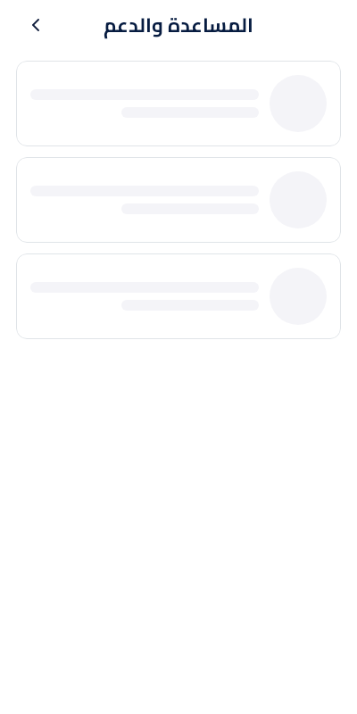
SCR-C29-errorSCR-C29-empty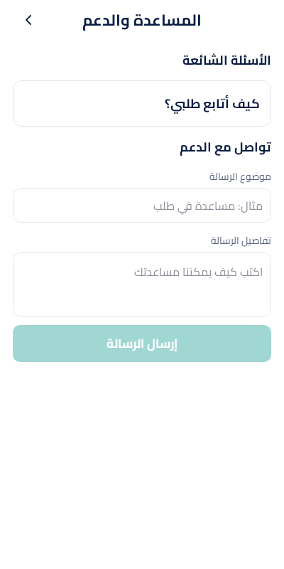
SCR-C29-invalid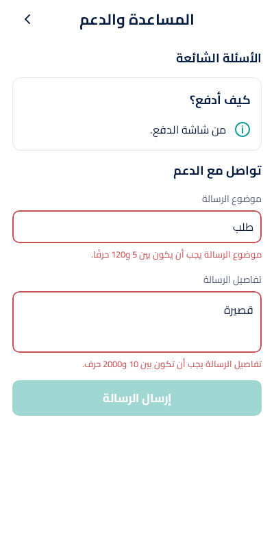
SCR-C29-submitting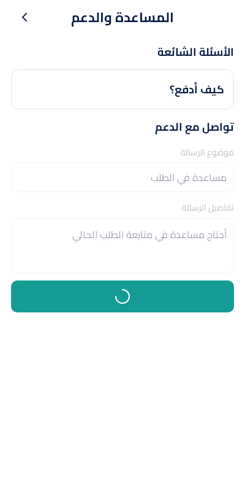
SCR-C29-successSCR-C32-loading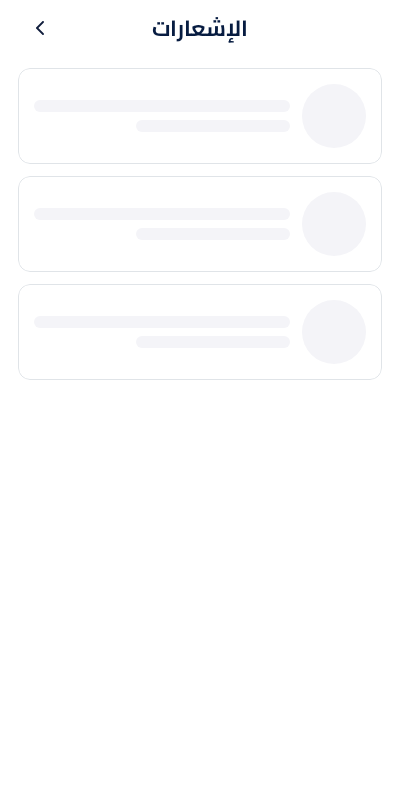
SCR-C32-errorSCR-C32-emptySCR-C32-mixed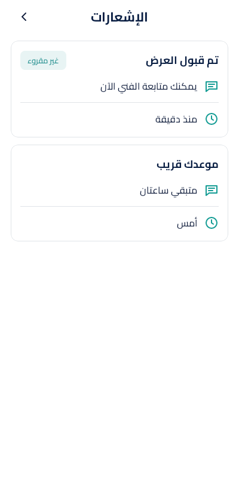
SCR-C32-marking_readSCR-C33-loading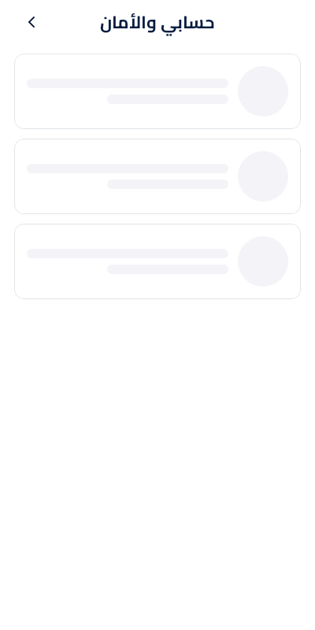
SCR-C33-errorSCR-C33-overview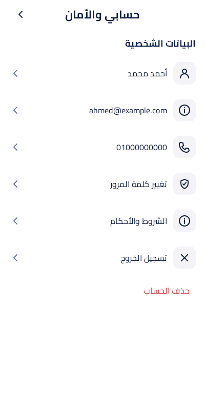
SCR-C33-invalid_edit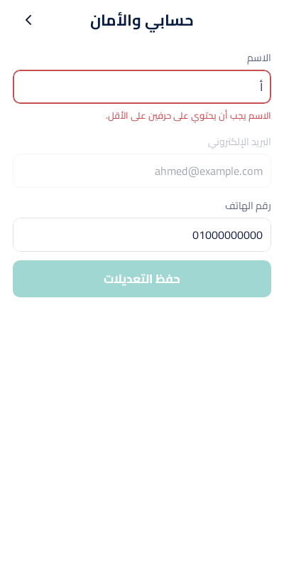
SCR-C33-invalid_password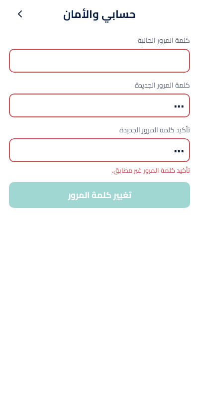
SCR-C33-confirm_deleteSCR-C33-active_order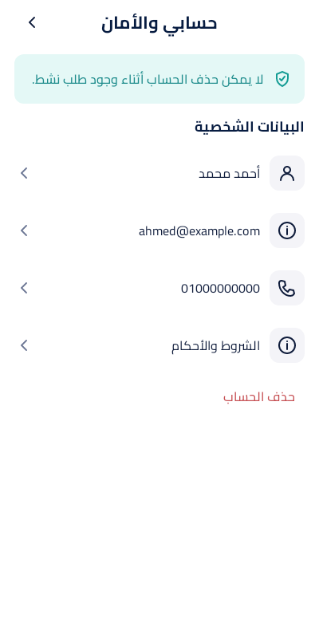
SCR-C33-deleting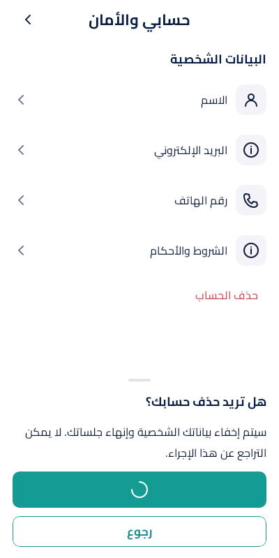
SCR-C33-success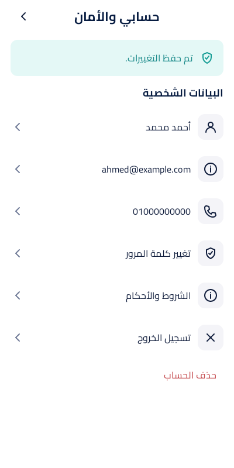
SCR-C34-loading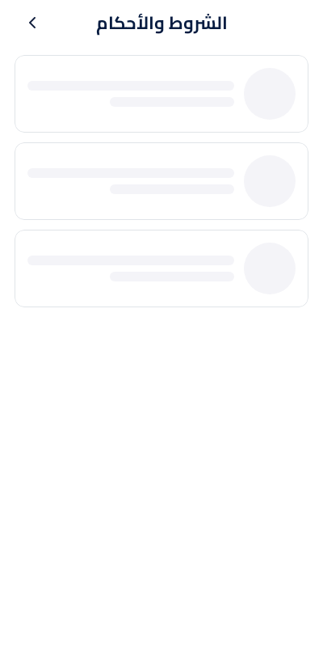
SCR-C34-errorSCR-C34-emptySCR-C34-currentSCR-C35-loadingSCR-C35-errorSCR-C35-edit_onlySCR-C35-republish_only
SCR-C35-edit_and_republishSCR-C35-submitting